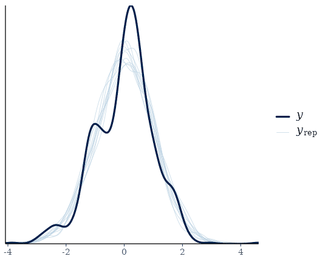
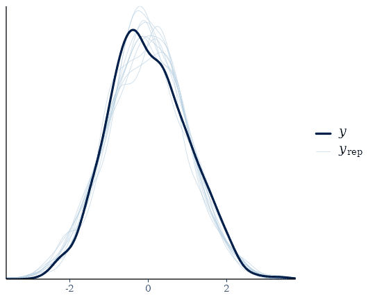
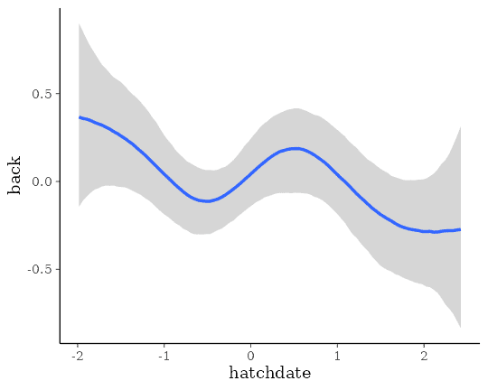

Estimating Multivariate Models with brms
Paul Bürkner
2026-08-20
Source:vignettes/brms_multivariate.Rmd
brms_multivariate.RmdIntroduction
In the present vignette, we want to discuss how to specify
multivariate multilevel models using brms. We call a
model multivariate if it contains multiple response variables,
each being predicted by its own set of predictors. Consider an example
from biology. Hadfield, Nutall, Osorio, and Owens (2007) analyzed data
of the Eurasian blue tit (https://en.wikipedia.org/wiki/Eurasian_blue_tit). They
predicted the tarsus length as well as the
back color of chicks. Half of the brood were put into
another fosternest, while the other half stayed in the
fosternest of their own dam. This allows to separate
genetic from environmental factors. Additionally, we have information
about the hatchdate and sex of the chicks (the
latter being known for 94% of the animals).
tarsus back animal dam fosternest hatchdate sex
1 -1.89229718 1.1464212 R187142 R187557 F2102 -0.6874021 Fem
2 1.13610981 -0.7596521 R187154 R187559 F1902 -0.6874021 Male
3 0.98468946 0.1449373 R187341 R187568 A602 -0.4279814 Male
4 0.37900806 0.2555847 R046169 R187518 A1302 -1.4656641 Male
5 -0.07525299 -0.3006992 R046161 R187528 A2602 -1.4656641 Fem
6 -1.13519543 1.5577219 R187409 R187945 C2302 0.3502805 FemBasic Multivariate Models
We begin with a relatively simple multivariate normal model.
bform1 <-
bf(mvbind(tarsus, back) ~ sex + hatchdate + (1|p|fosternest) + (1|q|dam)) +
set_rescor(TRUE)
fit1 <- brm(bform1, data = BTdata, chains = 2, cores = 2)As can be seen in the model code, we have used mvbind
notation to tell brms that both tarsus and
back are separate response variables. The term
(1|p|fosternest) indicates a varying intercept over
fosternest. By writing |p| in between we
indicate that all varying effects of fosternest should be
modeled as correlated. This makes sense since we actually have two model
parts, one for tarsus and one for back. The
indicator p is arbitrary and can be replaced by other
symbols that comes into your mind (for details about the multilevel
syntax of brms, see help("brmsformula")
and vignette("brms_multilevel")). Similarly, the term
(1|q|dam) indicates correlated varying effects of the
genetic mother of the chicks. Alternatively, we could have also modeled
the genetic similarities through pedigrees and corresponding relatedness
matrices, but this is not the focus of this vignette (please see
vignette("brms_phylogenetics")). The model results are
readily summarized via
fit1 <- add_criterion(fit1, "loo")
summary(fit1) Family: MV(gaussian, gaussian)
Links: mu = identity
mu = identity
Formula: tarsus ~ sex + hatchdate + (1 | p | fosternest) + (1 | q | dam)
back ~ sex + hatchdate + (1 | p | fosternest) + (1 | q | dam)
Data: BTdata (Number of observations: 828)
Draws: 2 chains, each with iter = 2000; warmup = 1000; thin = 1;
total post-warmup draws = 2000
Multilevel Hyperparameters:
~dam (Number of levels: 106)
Estimate Est.Error l-95% CI u-95% CI Rhat Bulk_ESS
sd(tarsus_Intercept) 0.48 0.05 0.39 0.58 1.00 820
sd(back_Intercept) 0.25 0.08 0.09 0.39 1.00 362
cor(tarsus_Intercept,back_Intercept) -0.51 0.22 -0.93 -0.07 1.00 636
Tail_ESS
sd(tarsus_Intercept) 1016
sd(back_Intercept) 697
cor(tarsus_Intercept,back_Intercept) 1064
~fosternest (Number of levels: 104)
Estimate Est.Error l-95% CI u-95% CI Rhat Bulk_ESS
sd(tarsus_Intercept) 0.28 0.05 0.17 0.38 1.00 608
sd(back_Intercept) 0.35 0.06 0.23 0.46 1.00 431
cor(tarsus_Intercept,back_Intercept) 0.67 0.21 0.19 0.98 1.00 289
Tail_ESS
sd(tarsus_Intercept) 1249
sd(back_Intercept) 693
cor(tarsus_Intercept,back_Intercept) 660
Regression Coefficients:
Estimate Est.Error l-95% CI u-95% CI Rhat Bulk_ESS Tail_ESS
tarsus_Intercept -0.41 0.07 -0.55 -0.28 1.00 1394 1593
back_Intercept -0.01 0.07 -0.14 0.12 1.00 2853 1666
tarsus_sexMale 0.77 0.06 0.67 0.88 1.00 3341 1716
tarsus_sexUNK 0.23 0.13 -0.01 0.48 1.00 2786 1707
tarsus_hatchdate -0.04 0.06 -0.15 0.07 1.00 1679 1547
back_sexMale 0.01 0.07 -0.12 0.14 1.00 4359 1467
back_sexUNK 0.15 0.14 -0.14 0.43 1.00 2871 1637
back_hatchdate -0.09 0.05 -0.20 0.01 1.00 2054 1541
Further Distributional Parameters:
Estimate Est.Error l-95% CI u-95% CI Rhat Bulk_ESS Tail_ESS
sigma_tarsus 0.76 0.02 0.72 0.80 1.00 1875 1476
sigma_back 0.90 0.02 0.86 0.95 1.01 2069 1429
Residual Correlations:
Estimate Est.Error l-95% CI u-95% CI Rhat Bulk_ESS Tail_ESS
rescor(tarsus,back) -0.05 0.04 -0.13 0.03 1.00 2271 1240
Draws were sampled using sampling(NUTS). For each parameter, Bulk_ESS
and Tail_ESS are effective sample size measures, and Rhat is the potential
scale reduction factor on split chains (at convergence, Rhat = 1).The summary output of multivariate models closely resembles those of
univariate models, except that the parameters now have the corresponding
response variable as prefix. Across dams, tarsus length and back color
seem to be negatively correlated, while across fosternests the opposite
is true. This indicates differential effects of genetic and
environmental factors on these two characteristics. Further, the small
residual correlation rescor(tarsus, back) on the bottom of
the output indicates that there is little unmodeled dependency between
tarsus length and back color. Although not necessary at this point, we
have already computed and stored the LOO information criterion of
fit1, which we will use for model comparisons. Next, let’s
take a look at some posterior-predictive checks, which give us a first
impression of the model fit.
pp_check(fit1, resp = "tarsus")
pp_check(fit1, resp = "back")
This looks pretty solid, but we notice a slight unmodeled left
skewness in the distribution of tarsus. We will come back
to this later on. Next, we want to investigate how much variation in the
response variables can be explained by our model and we use a Bayesian
generalization of the \(R^2\)
coefficient.
bayes_R2(fit1) Estimate Est.Error Q2.5 Q97.5
R2tarsus 0.4338179 0.02704771 0.3779159 0.4845586
R2back 0.1978910 0.02819298 0.1420786 0.2540060Clearly, there is much variation in both animal characteristics that we can not explain, but apparently we can explain more of the variation in tarsus length than in back color.
More Complex Multivariate Models
Now, suppose we only want to control for sex in
tarsus but not in back and vice versa for
hatchdate. Not that this is particular reasonable for the
present example, but it allows us to illustrate how to specify different
formulas for different response variables. We can no longer use
mvbind syntax and so we have to use a more verbose
approach:
bf_tarsus <- bf(tarsus ~ sex + (1|p|fosternest) + (1|q|dam))
bf_back <- bf(back ~ hatchdate + (1|p|fosternest) + (1|q|dam))
fit2 <- brm(bf_tarsus + bf_back + set_rescor(TRUE),
data = BTdata, chains = 2, cores = 2)Note that we have literally added the two model parts via
the + operator, which is in this case equivalent to writing
mvbf(bf_tarsus, bf_back). See
help("brmsformula") and help("mvbrmsformula")
for more details about this syntax. Again, we summarize the model
first.
fit2 <- add_criterion(fit2, "loo")
summary(fit2) Family: MV(gaussian, gaussian)
Links: mu = identity
mu = identity
Formula: tarsus ~ sex + (1 | p | fosternest) + (1 | q | dam)
back ~ hatchdate + (1 | p | fosternest) + (1 | q | dam)
Data: BTdata (Number of observations: 828)
Draws: 2 chains, each with iter = 2000; warmup = 1000; thin = 1;
total post-warmup draws = 2000
Multilevel Hyperparameters:
~dam (Number of levels: 106)
Estimate Est.Error l-95% CI u-95% CI Rhat Bulk_ESS
sd(tarsus_Intercept) 0.49 0.05 0.39 0.59 1.00 934
sd(back_Intercept) 0.25 0.08 0.11 0.39 1.01 373
cor(tarsus_Intercept,back_Intercept) -0.50 0.23 -0.95 -0.04 1.00 721
Tail_ESS
sd(tarsus_Intercept) 1302
sd(back_Intercept) 1077
cor(tarsus_Intercept,back_Intercept) 672
~fosternest (Number of levels: 104)
Estimate Est.Error l-95% CI u-95% CI Rhat Bulk_ESS
sd(tarsus_Intercept) 0.26 0.05 0.16 0.38 1.00 769
sd(back_Intercept) 0.34 0.06 0.22 0.47 1.00 580
cor(tarsus_Intercept,back_Intercept) 0.69 0.21 0.21 0.99 1.02 216
Tail_ESS
sd(tarsus_Intercept) 1320
sd(back_Intercept) 822
cor(tarsus_Intercept,back_Intercept) 738
Regression Coefficients:
Estimate Est.Error l-95% CI u-95% CI Rhat Bulk_ESS Tail_ESS
tarsus_Intercept -0.41 0.07 -0.54 -0.28 1.00 1815 1482
back_Intercept 0.00 0.05 -0.10 0.11 1.00 2864 1708
tarsus_sexMale 0.77 0.06 0.66 0.88 1.00 3903 1413
tarsus_sexUNK 0.23 0.13 -0.02 0.47 1.00 4158 1692
back_hatchdate -0.08 0.05 -0.18 0.01 1.00 2852 1505
Further Distributional Parameters:
Estimate Est.Error l-95% CI u-95% CI Rhat Bulk_ESS Tail_ESS
sigma_tarsus 0.76 0.02 0.72 0.80 1.00 2499 1562
sigma_back 0.90 0.02 0.85 0.95 1.00 2782 1550
Residual Correlations:
Estimate Est.Error l-95% CI u-95% CI Rhat Bulk_ESS Tail_ESS
rescor(tarsus,back) -0.05 0.04 -0.12 0.02 1.01 3235 1622
Draws were sampled using sampling(NUTS). For each parameter, Bulk_ESS
and Tail_ESS are effective sample size measures, and Rhat is the potential
scale reduction factor on split chains (at convergence, Rhat = 1).Let’s find out, how model fit changed due to excluding certain effects from the initial model:
loo(fit1, fit2)Output of model 'fit1':
Computed from 2000 by 828 log-likelihood matrix.
Estimate SE
elpd_loo -2125.3 33.6
p_loo 175.8 7.5
looic 4250.6 67.2
------
MCSE of elpd_loo is NA.
MCSE and ESS estimates assume MCMC draws (r_eff in [0.4, 1.7]).
Pareto k diagnostic values:
Count Pct. Min. ESS
(-Inf, 0.7] (good) 827 99.9% 91
(0.7, 1] (bad) 1 0.1% <NA>
(1, Inf) (very bad) 0 0.0% <NA>
See help('pareto-k-diagnostic') for details.
Output of model 'fit2':
Computed from 2000 by 828 log-likelihood matrix.
Estimate SE
elpd_loo -2124.6 33.7
p_loo 173.8 7.3
looic 4249.1 67.4
------
MCSE of elpd_loo is NA.
MCSE and ESS estimates assume MCMC draws (r_eff in [0.4, 2.0]).
Pareto k diagnostic values:
Count Pct. Min. ESS
(-Inf, 0.7] (good) 827 99.9% 106
(0.7, 1] (bad) 1 0.1% <NA>
(1, Inf) (very bad) 0 0.0% <NA>
See help('pareto-k-diagnostic') for details.
Model comparisons:
model elpd_diff se_diff p_worse diag_diff diag_elpd
fit2 0.0 0.0 NA 1 k_psis > 0.7
fit1 -0.7 1.3 0.71 |elpd_diff| < 4 1 k_psis > 0.7Apparently, there is no noteworthy difference in the model fit.
Accordingly, we do not really need to model sex and
hatchdate for both response variables, but there is also no
harm in including them (so I would probably just include them).
To give you a glimpse of the capabilities of brms’
multivariate syntax, we change our model in various directions at the
same time. Remember the slight left skewness of tarsus,
which we will now model by using the skew_normal family
instead of the gaussian family. Since we do not have a
multivariate normal (or student-t) model, anymore, estimating residual
correlations is no longer possible. We make this explicit using the
set_rescor function. Further, we investigate if the
relationship of back and hatchdate is really
linear as previously assumed by fitting a non-linear spline of
hatchdate. On top of it, we model separate residual
variances of tarsus for male and female chicks.
bf_tarsus <- bf(tarsus ~ sex + (1|p|fosternest) + (1|q|dam)) +
lf(sigma ~ 0 + sex) + skew_normal()
bf_back <- bf(back ~ s(hatchdate) + (1|p|fosternest) + (1|q|dam)) +
gaussian()
fit3 <- brm(
bf_tarsus + bf_back + set_rescor(FALSE),
data = BTdata, chains = 2, cores = 2,
control = list(adapt_delta = 0.95)
)Again, we summarize the model and look at some posterior-predictive checks.
fit3 <- add_criterion(fit3, "loo")
summary(fit3) Family: MV(skew_normal, gaussian)
Links: mu = identity; sigma = log
mu = identity
Formula: tarsus ~ sex + (1 | p | fosternest) + (1 | q | dam)
sigma ~ 0 + sex
back ~ s(hatchdate) + (1 | p | fosternest) + (1 | q | dam)
Data: BTdata (Number of observations: 828)
Draws: 2 chains, each with iter = 2000; warmup = 1000; thin = 1;
total post-warmup draws = 2000
Smoothing Spline Hyperparameters:
Estimate Est.Error l-95% CI u-95% CI Rhat Bulk_ESS Tail_ESS
sds(back_shatchdate_1) 1.91 0.99 0.22 4.21 1.00 536 426
Multilevel Hyperparameters:
~dam (Number of levels: 106)
Estimate Est.Error l-95% CI u-95% CI Rhat Bulk_ESS
sd(tarsus_Intercept) 0.48 0.05 0.38 0.57 1.00 743
sd(back_Intercept) 0.24 0.07 0.10 0.37 1.00 519
cor(tarsus_Intercept,back_Intercept) -0.52 0.22 -0.94 -0.05 1.00 688
Tail_ESS
sd(tarsus_Intercept) 1139
sd(back_Intercept) 651
cor(tarsus_Intercept,back_Intercept) 777
~fosternest (Number of levels: 104)
Estimate Est.Error l-95% CI u-95% CI Rhat Bulk_ESS
sd(tarsus_Intercept) 0.26 0.05 0.16 0.36 1.00 807
sd(back_Intercept) 0.31 0.06 0.19 0.42 1.00 642
cor(tarsus_Intercept,back_Intercept) 0.65 0.22 0.16 0.98 1.01 236
Tail_ESS
sd(tarsus_Intercept) 1192
sd(back_Intercept) 1174
cor(tarsus_Intercept,back_Intercept) 442
Regression Coefficients:
Estimate Est.Error l-95% CI u-95% CI Rhat Bulk_ESS Tail_ESS
tarsus_Intercept -0.41 0.07 -0.54 -0.27 1.00 1455 1244
back_Intercept 0.00 0.05 -0.10 0.10 1.00 2215 1572
tarsus_sexMale 0.77 0.06 0.66 0.89 1.00 3172 1114
tarsus_sexUNK 0.21 0.12 -0.04 0.46 1.00 2710 1568
sigma_tarsus_sexFem -0.30 0.04 -0.38 -0.22 1.00 2797 1436
sigma_tarsus_sexMale -0.25 0.04 -0.32 -0.17 1.00 2692 1265
sigma_tarsus_sexUNK -0.39 0.13 -0.64 -0.14 1.00 2844 1201
back_shatchdate_1 -0.31 2.95 -5.67 6.34 1.00 1397 991
Further Distributional Parameters:
Estimate Est.Error l-95% CI u-95% CI Rhat Bulk_ESS Tail_ESS
sigma_back 0.90 0.02 0.86 0.95 1.00 2522 1270
alpha_tarsus -1.19 0.47 -1.87 0.26 1.01 984 458
Draws were sampled using sampling(NUTS). For each parameter, Bulk_ESS
and Tail_ESS are effective sample size measures, and Rhat is the potential
scale reduction factor on split chains (at convergence, Rhat = 1).We see that the (log) residual standard deviation of
tarsus is somewhat larger for chicks whose sex could not be
identified as compared to male or female chicks. Further, we see from
the negative alpha (skewness) parameter of
tarsus that the residuals are indeed slightly left-skewed.
Lastly, running
conditional_effects(fit3, "hatchdate", resp = "back")
reveals a non-linear relationship of hatchdate on the
back color, which seems to change in waves over the course
of the hatch dates.
There are many more modeling options for multivariate models, which
are not discussed in this vignette. Examples include autocorrelation
structures, Gaussian processes, or explicit non-linear predictors (e.g.,
see help("brmsformula") or
vignette("brms_multilevel")). In fact, nearly all the
flexibility of univariate models is retained in multivariate models.